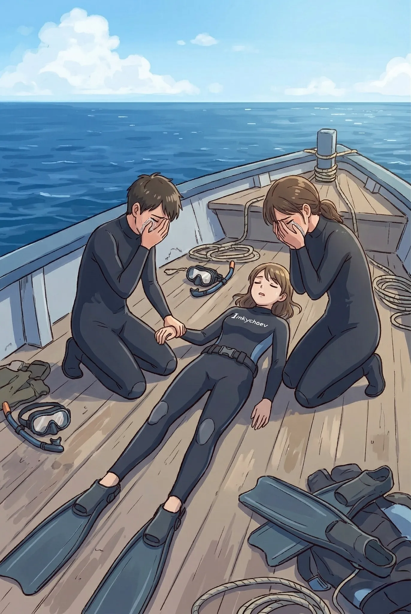
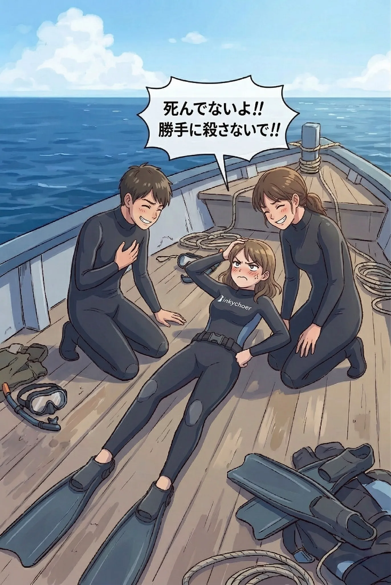
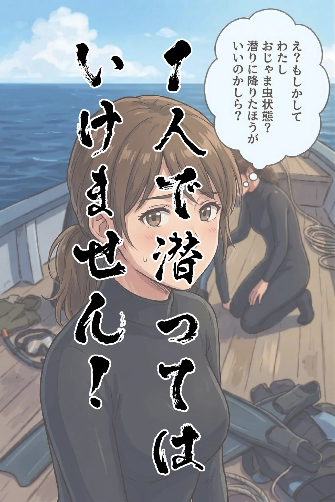

The road Orz passed by 2026 年 03 月
03 月 25 日 ( 水 )
Dive #146 シャローウォーターブラックアウトその後
シャローウォーターブラックアウトは実に恐ろしい。TPO をまきわえずにイチャコラして２人の世界に潜って浮上してこないダイバーが出ます (嘘です)。





- Category :
- #Records of Orz's Road
- #スキンダイビング
- #シャローウォーターブラックアウト
- #ヒヤリハット